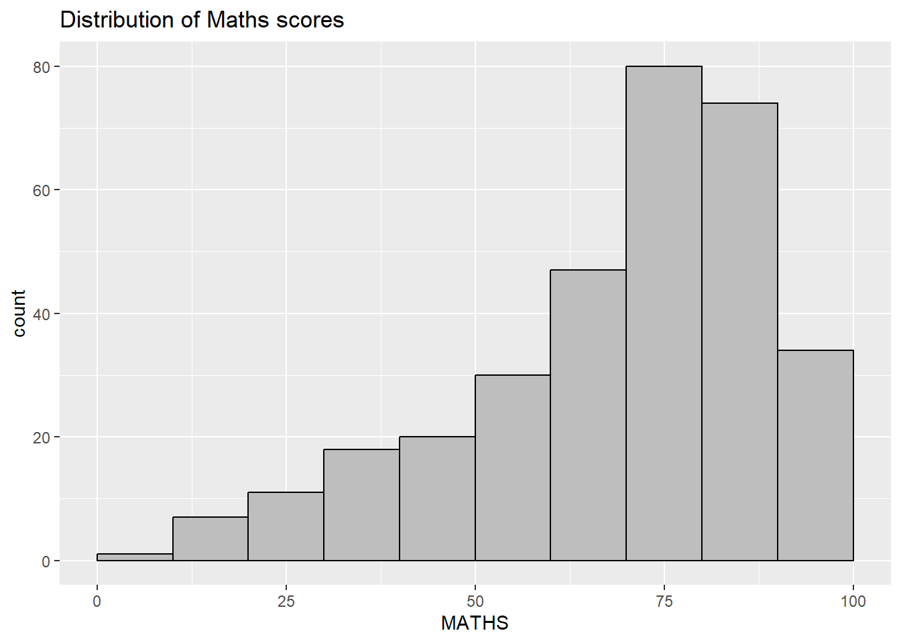
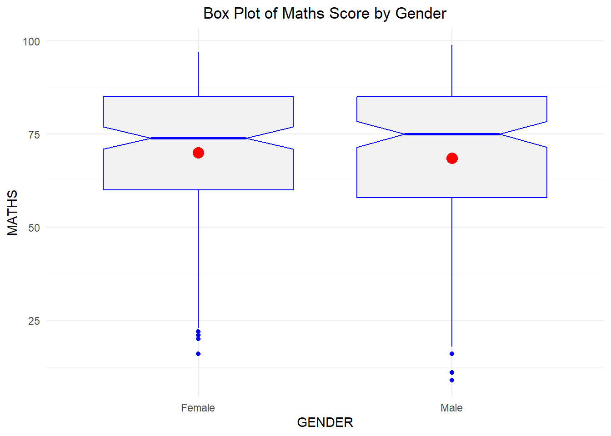
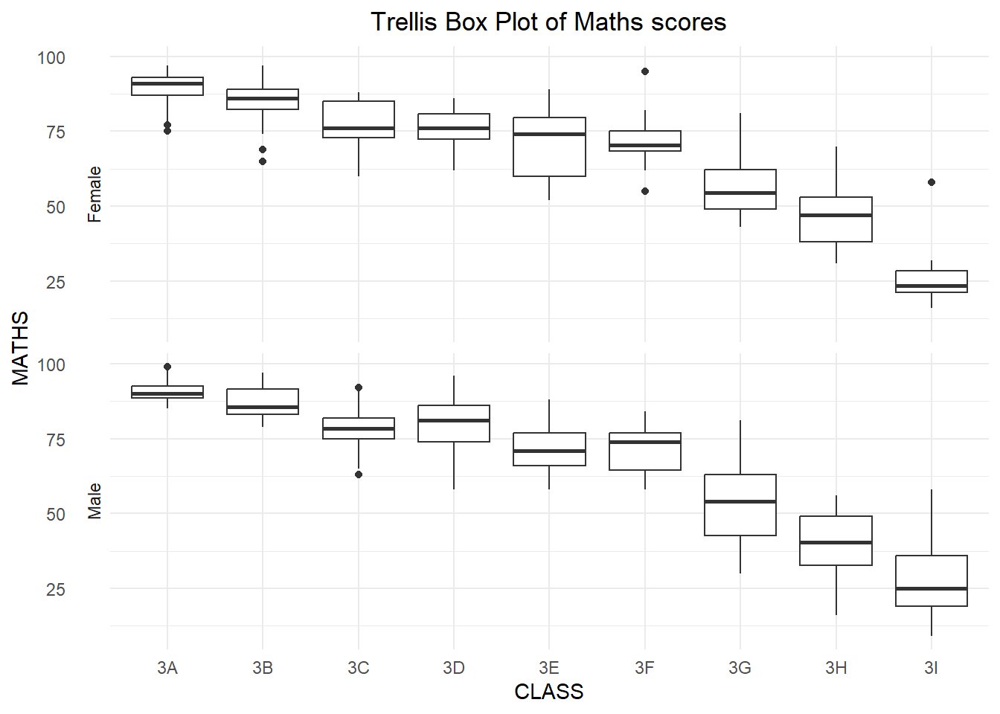
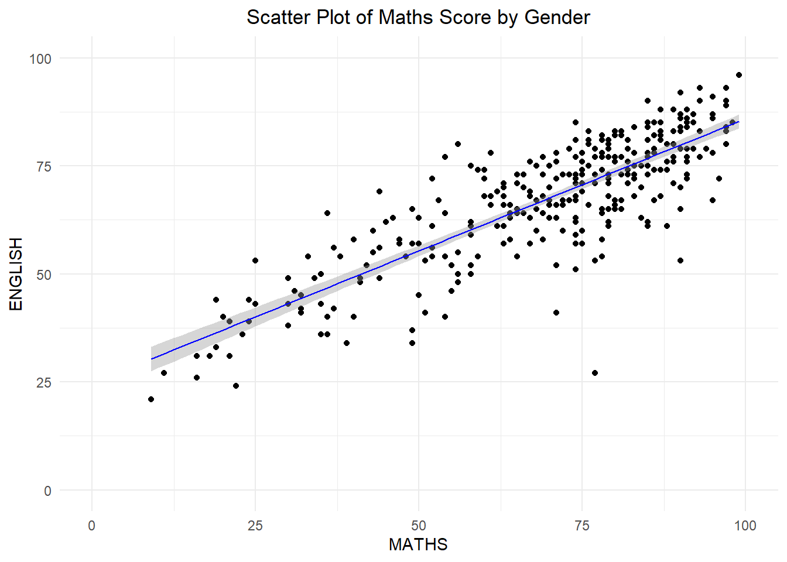

pacman::p_load(tidyverse)Hands-on Exercise 1 - At the Home-port
A Layered Grammar of Graphics: ggplot2 methods
In this chapter, you will learn the basic principles and essential components of ggplot2. At the same time, you will gain hands-on experience on using these components to plot statistical graphics based on the principle of Layered Grammar of Graphics. By then end of this chapter you will be able to apply the essential graphical elements provided by ggplot2 to create elegant and yet functional statistical graphics.

1. Getting Started
1.1 Install and launching R packages
The code chunk below uses p_load() of pacman package to check if tidyverse packages are installed in the computer. If they are, then they will be launched into R.
1.2 Importing the data
The code chunk below imports exam_data.csv into R environment by using read_csv() function of readr package.
exam_data <- read_csv("data/Exam_data.csv")Summary of data imported
summary(exam_data) ID CLASS GENDER RACE
Length:322 Length:322 Length:322 Length:322
Class :character Class :character Class :character Class :character
Mode :character Mode :character Mode :character Mode :character
ENGLISH MATHS SCIENCE
Min. :21.00 Min. : 9.00 Min. :15.00
1st Qu.:59.00 1st Qu.:58.00 1st Qu.:49.25
Median :70.00 Median :74.00 Median :65.00
Mean :67.18 Mean :69.33 Mean :61.16
3rd Qu.:78.00 3rd Qu.:85.00 3rd Qu.:74.75
Max. :96.00 Max. :99.00 Max. :96.00 2. Plotting a simple bar chart
ggplot(data = exam_data,
aes(x = RACE)) +
geom_bar()+
labs(x = "RACE", y = "Number of students", title = "Distribution of students by RACE") +
theme_minimal() +
theme(plot.title = element_text(hjust = 0.5))
3. Initial Exploration of ggplot2
3.1 Exploring Base R vs ggplot2
hist(exam_data$MATHS)
ggplot(data=exam_data, aes(x = MATHS)) +
geom_histogram(bins=10,
boundary = 100,
color="black",
fill="grey") +
ggtitle("Distribution of Maths scores")
4. Grammar of Graphics
Before we getting started using ggplot2, it is important for us to understand the principles of Grammer of Graphics.
Grammar of Graphics is a general scheme for data visualization which breaks up graphs into semantic components such as scales and layers. It was introduced by Leland Wilkinson (1999) Grammar of Graphics, Springer. The grammar of graphics is an answer to a question:
What is a statistical graphic?
In the nutshell, Grammar of Graphics defines the rules of structuring mathematical and aesthetic elements into a meaningful graph.
There are two principles in Grammar of Graphics, they are:
Graphics = distinct layers of grammatical elements
Meaningful plots through aesthetic mapping
A good grammar of graphics will allow us to gain insight into the composition of complicated graphics, and reveal unexpected connections between seemingly different graphics (Cox 1978). It also provides a strong foundation for understanding a diverse range of graphics. Furthermore, it may also help guide us on what a well-formed or correct graphic looks like, but there will still be many grammatically correct but nonsensical graphics.
ggplot2 is an implementation of Leland Wilkinson’s Grammar of Graphics. Figure below shows the seven grammars of ggplot2.

A short description of each building block are as follows:
Data: The dataset being plotted.
Aesthetics take attributes of the data and use them to influence visual characteristics, such as position, colours, size, shape, or transparency.
Geometrics: The visual elements used for our data, such as point, bar or line.
Facets split the data into subsets to create multiple variations of the same graph (paneling, multiple plots).
Statistics, statiscal transformations that summarise data (e.g. mean, confidence intervals).
Coordinate systems define the plane on which data are mapped on the graphic.
Themes modify all non-data components of a plot, such as main title, sub-title, y-aixs title, or legend background.
5. Essential Grammatical Elements in ggplot2: data
Call the ggplot() function using the code chunk below.
A blank canvas appears.
ggplot()initializes a ggplot object.The data argument defines the dataset to be used for plotting.
If the dataset is not already a data.frame, it will be converted to one by
fortify().
ggplot(data=exam_data)
6. Essential Grammatical Elements in ggplot2: Aesthetic mappings
The aesthetic mappings take attributes of the data and and use them to influence visual characteristics, such as position, colour, size, shape, or transparency. Each visual characteristic can thus encode an aspect of the data and be used to convey information.
All aesthetics of a plot are specified in the aes() function call (in later part of this lesson, you will see that each geom layer can have its own aes specification)
Code chunk below adds the aesthetic element into the plot.
ggplot(data=exam_data,
aes(x= MATHS))
7. Essential Grammatical Elements in ggplot2: geom
The geom layer combines data, aesthetic mapping, a geom (geometric object), a stat (statistical transformation), and a position adjustment. Some examples of geom objects are shown below.
Examples include:
geom_point for drawing individual points (e.g., a scatter plot)
geom_line for drawing lines (e.g., for a line charts)
geom_smooth for drawing smoothed lines (e.g., for simple trends or approximations)
geom_bar for drawing bars (e.g., for bar charts)
geom_histogram for drawing binned values (e.g. a histogram)
geom_polygon for drawing arbitrary shapes
geom_map for drawing polygons in the shape of a map! (You can access the data to use for these maps by using the map_data() function).
A plot must have at least one geom; there is no upper limit. You can add a geom to a plot using the + operator.
- For complete list, please refer to here.

7.1 Bar Chart
The code chunk below plots a bar chart by using geom_bar().
ggplot(data=exam_data,
aes(x=RACE)) +
geom_bar(fill = "lightblue", width = 0.6, color = "darkblue") +
labs(x = "RACE", y = "Number of students", title = "Distribution of students by RACE") +
theme_minimal() +
theme(plot.title = element_text(hjust = 0.5))
7.2 Dot Plot
In a dot plot, the width of a dot corresponds to the bin width (or maximum width, depending on the binning algorithm), and dots are stacked, with each dot representing one observation.
In the code chunk below, geom_dotplot() of ggplot2 is used to plot a dot plot.
ggplot(data=exam_data,
aes(x = MATHS)) +
geom_dotplot(binwidth = 2.5,
dotsize = 0.5, fill = "lightblue") +
scale_y_continuous(NULL, breaks = NULL)+
labs(x = "MATHS score", title = "Distribution of MATHS score") +
theme_minimal() +
theme(plot.title = element_text(hjust = 0.5))7.3 Histogram Plot
In the code chunk below, geom_histogram() is used to create a simple histogram by using values in MATHS field of exam_data.
ggplot(data=exam_data, aes(x = MATHS)) +
geom_histogram(bins=20,
boundary = 100,
color="darkblue",
fill="lightblue") +
ggtitle("Distribution of Maths scores") +
theme_minimal() +
theme(plot.title = element_text(hjust = 0.5))7.4 Modifying a geometric object by changing aes() - Stacked Histogram
In the code chunk below,
bins argument is used to change the number of bins to 20,
fill argument is used to change the interior colour of the histogram by using sub-group of aesthetic(), and
color argument is used to change the outline colour of the bars in grey
ggplot(data=exam_data,
aes(x= MATHS,
fill = GENDER)) +
geom_histogram(bins=20,
color="grey30") +
ggtitle("Distribution of Maths scores") +
theme_minimal() +
theme(plot.title = element_text(hjust = 0.5))
7.5 Density Plot
geom-density() computes and plots kernel density estimate, which is a smoothed version of the histogram.
It is a useful alternative to the histogram for continuous data that comes from an underlying smooth distribution.
The code chunk below plots two kernel density lines by using colour or fill arguments of aes().
ggplot(data=exam_data,
aes(x = MATHS, color = GENDER)) +
geom_density() +
ggtitle("Density Distribution of Maths scores by Gender") +
theme_minimal() +
theme(plot.title = element_text(hjust = 0.5))7.6 Box Plot
geom_boxplot() displays continuous value list. It visualises five summary statistics (the median, two hinges and two whiskers), and all “outlying” points individually.
The code chunk below plots boxplots by using geom_boxplot().
ggplot(data=exam_data,
aes(y = MATHS,
x= GENDER)) +
geom_boxplot(color = "blue", fill = "grey95") +
stat_summary(geom = "point",
fun="mean",
colour ="red",
size=4) +
ggtitle("Box Plot of Maths Score by Gender") +
theme_minimal() +
theme(plot.title = element_text(hjust = 0.5))
Notches are used in box plots to help visually assess whether the medians of distributions differ. If the notches do not overlap, this is evidence that the medians are different.
The code chunk below plots the distribution of Maths scores by gender in notched plot instead of boxplot.
ggplot(data=exam_data,
aes(y = MATHS,
x= GENDER)) +
geom_boxplot(notch = TRUE, color = "blue", fill = "grey95") +
stat_summary(geom = "point",
fun="mean",
colour ="red",
size=4) +
ggtitle("Box Plot of Maths Score by Gender") +
theme_minimal() +
theme(plot.title = element_text(hjust = 0.5))
7.7 Violin Plot
geom_violin is designed for creating violin plot. Violin plots are a way of comparing multiple data distributions. With ordinary density curves, it is difficult to compare more than just a few distributions because the lines visually interfere with each other. With a violin plot, it’s easier to compare several distributions since they’re placed side by side.
The code below plot the distribution of Maths score by gender in violin plot.
ggplot(data=exam_data,
aes(y = MATHS,
x = GENDER)) +
geom_violin(color = "blue") +
ggtitle("Violin Plot of Maths Score by Gender") +
theme_minimal() +
theme(plot.title = element_text(hjust = 0.5))7.8 Scatter Plot
geom_point() is especially useful for creating scatterplot.
The code chunk below plots a scatterplot showing the Maths and English grades of pupils by using geom_point().
ggplot(data=exam_data,
aes(x= MATHS,
y = ENGLISH, shape = GENDER, color = GENDER)) +
geom_point() +
geom_smooth(linewidth = 0.5) +
ggtitle("Scatter Plot of Maths Score by Gender") +
theme_minimal() +
theme(plot.title = element_text(hjust = 0.5))7.9 Combining Box Plot and Scatter Plot
The code chunk below plots the data points on the boxplots by using both geom_boxplot() and geom_point().
ggplot(data=exam_data,
aes(y = MATHS,
x= GENDER)) +
geom_boxplot(color = "blue") +
geom_point(position="jitter",
size = 0.5) +
ggtitle("Combination Plot of Maths Score by Gender") +
theme_minimal() +
theme(plot.title = element_text(hjust = 0.5))
7.10 Exploring Statistics functions
The Statistics functions statistically transform data, usually as some form of summary. For example:
frequency of values of a variable (bar graph)
a mean
a confidence limit
There are two ways to use these functions:
add a
stat_()function and override the default geom, oradd a
geom_()function and override the default stat.
Using stat_summary()
The code chunk below adds mean values by using stat_summary() function and overriding the default geom.
ggplot(data=exam_data,
aes(y = MATHS, x= GENDER)) +
geom_boxplot() +
stat_summary(geom = "point",
fun.y="mean",
colour ="red",
size=4) +
ggtitle("Box Plot of Maths Score by Gender") +
theme_minimal() +
theme(plot.title = element_text(hjust = 0.5))
Using geom_() function to override default stat.
The code chunk below adding mean values by using geom_() function and overriding the default stat.
ggplot(data=exam_data,
aes(y = MATHS, x= GENDER)) +
geom_boxplot() +
geom_point(stat = "summary",
fun="mean",
colour ="red",
size=4) +
ggtitle("Box Plot of Maths Score by Gender") +
theme_minimal() +
theme(plot.title = element_text(hjust = 0.5))
7.11 Adding best fit curve on Scatter Plot
The scatterplot below shows the relationship of Maths and English grades of pupils. The interpretability of this graph can be improved by adding a best fit curve.
In the code chunk below, geom_smooth() is used to plot a best fit curve on the scatterplot.
ggplot(data=exam_data,
aes(x= MATHS,
y = ENGLISH)) +
geom_point() +
geom_smooth(linewidth=0.5,
color = "red") +
geom_smooth(method = lm,
linewidth=0.5,
color = "blue") +
ggtitle("Scatter Plot of Maths Score by Gender") +
theme_minimal() +
theme(plot.title = element_text(hjust = 0.5))
8. Exploring ggplot2 Facet objects
Facetting generates small multiples (sometimes also called trellis plot), each displaying a different subset of the data. They are an alternative to aesthetics for displaying additional discrete variables. ggplot2 supports two types of factes, namely: facet_grid() and facet_wrap.
8.1 Using facet_wrap()
facet_wrap wraps a 1d sequence of panels into 2d. This is generally a better use of screen space than facet_grid because most displays are roughly rectangular.
The code chunk below plots a trellis plot using facet-wrap().
ggplot(data=exam_data,
aes(x= MATHS)) +
geom_histogram(bins=20) +
facet_wrap(~ CLASS) +
ggtitle("Distribution of Maths Score by Class") +
theme_minimal() +
theme(plot.title = element_text(hjust = 0.5))
8.2 Using facet_grid()
facet_grid() forms a matrix of panels defined by row and column facetting variables. It is most useful when you have two discrete variables, and all combinations of the variables exist in the data.
The code chunk below plots a trellis plot using facet_grid().
ggplot(data=exam_data,
aes(x= MATHS)) +
geom_histogram(bins=20) +
facet_grid(~ CLASS) +
ggtitle("Distribution of Maths Score by Class") +
theme_minimal() +
theme(plot.title = element_text(hjust = 0.5))8.3 Creating Trellis Box Plot
Self-practice: Below code chunks shows the use of geom_boxplot() with facet_wrap() to produce a Trellis Box Plot.
ggplot(data = exam_data,
aes(x=CLASS,
y=MATHS)) +
geom_boxplot() +
facet_wrap(~ GENDER) +
ggtitle("Trellis Box Plot of Maths scores") +
theme_minimal() +
theme(plot.title = element_text(hjust=0.5))ggplot(data = exam_data,
aes(x=CLASS,
y=MATHS)) +
geom_boxplot() +
facet_wrap(~ GENDER, nrow = 2, strip.position = "left") +
ggtitle("Trellis Box Plot of Maths scores") +
theme_minimal() +
theme(plot.title = element_text(hjust=0.5))
9. Exploring ggplot2 Coordinates
The Coordinates functions map the position of objects onto the plane of the plot. There are a number of different possible coordinate systems to use, they are:
- [`coord_cartesian()`](https://ggplot2.tidyverse.org/reference/coord_cartesian.html): the default cartesian coordinate systems, where you specify x and y values (e.g. allows you to zoom in or out).
- [`coord_flip()`](https://ggplot2.tidyverse.org/reference/coord_flip.html): a cartesian system with the x and y flipped.
- [`coord_fixed()`](https://ggplot2.tidyverse.org/reference/coord_fixed.html): a cartesian system with a "fixed" aspect ratio (e.g. 1.78 for a "widescreen" plot).
- [`coord_quickmap()`](https://ggplot2.tidyverse.org/reference/coord_map.html): a coordinate system that approximates a good aspect ratio for maps.9.1 Horizontal Bar Chart using coord_flip()
The code chunk below flips the horizontal bar chart into vertical bar chart by using coord_flip().
ggplot(data=exam_data,
aes(x=RACE)) +
geom_bar(fill = "lightblue") +
coord_flip() +
ggtitle("Distribution of students by Race") +
theme_minimal() +
theme(plot.title = element_text(hjust = 0.5))9.2 Changing y- and x- axes range
The code chunk below fixed both the y-axis and x-axis range from 0-100.
ggplot(data=exam_data,
aes(x= MATHS,
y = ENGLISH)) +
geom_point() +
geom_smooth(method = lm,
linewidth=0.5,
color = "blue") +
coord_cartesian(xlim = c(0,100),
ylim = c(0,100)) +
ggtitle("Scatter Plot of Maths Score by Gender") +
theme_minimal() +
theme(plot.title = element_text(hjust = 0.5))
10. Exploring ggplot2 Themes
Themes control elements of the graph not related to the data. For example:
background colour
size of fonts
gridlines
colour of labels
Built-in themes include: - theme_gray() (default) - theme_bw() - theme_classic()
A list of theme can be found at this link. Each theme element can be conceived of as either a line (e.g. x-axis), a rectangle (e.g. graph background), or text (e.g. axis title).
10.1 Working with themes
ggplot(data = exam_data,
aes(x = RACE)) +
geom_bar(fill = "yellow") +
coord_flip() +
theme_gray() +
ggtitle("Distribution of students by Race") +
theme(plot.title = element_text(hjust = 0.5, color = "blue"))ggplot(data = exam_data,
aes(x = RACE)) +
geom_bar(fill = "yellow") +
coord_flip() +
theme_minimal() +
ggtitle("Distribution of students by Race") +
theme(plot.title = element_text(hjust = 0.5, color = "blue"))ggplot(data = exam_data,
aes(x = RACE)) +
geom_bar(fill = "yellow") +
coord_flip() +
theme_bw() +
ggtitle("Distribution of students by Race") +
theme(plot.title = element_text(hjust = 0.5, color = "blue"))ggplot(data = exam_data,
aes(x = RACE)) +
geom_bar(fill = "yellow") +
coord_flip() +
theme_classic() +
ggtitle("Distribution of students by Race") +
theme(plot.title = element_text(hjust = 0.5, color = "blue"))11. Reference
Hadley Wickham (2023) ggplot2: Elegant Graphics for Data Analysis. Online 3rd edition.
Winston Chang (2013) R Graphics Cookbook 2nd edition. Online version.
Healy, Kieran (2019) Data Visualization: A practical introduction. Online version